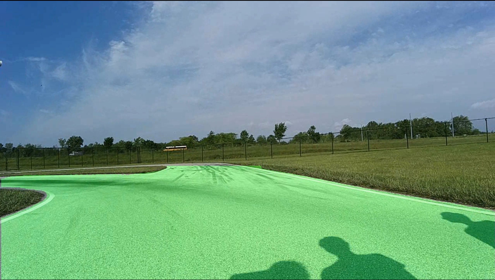
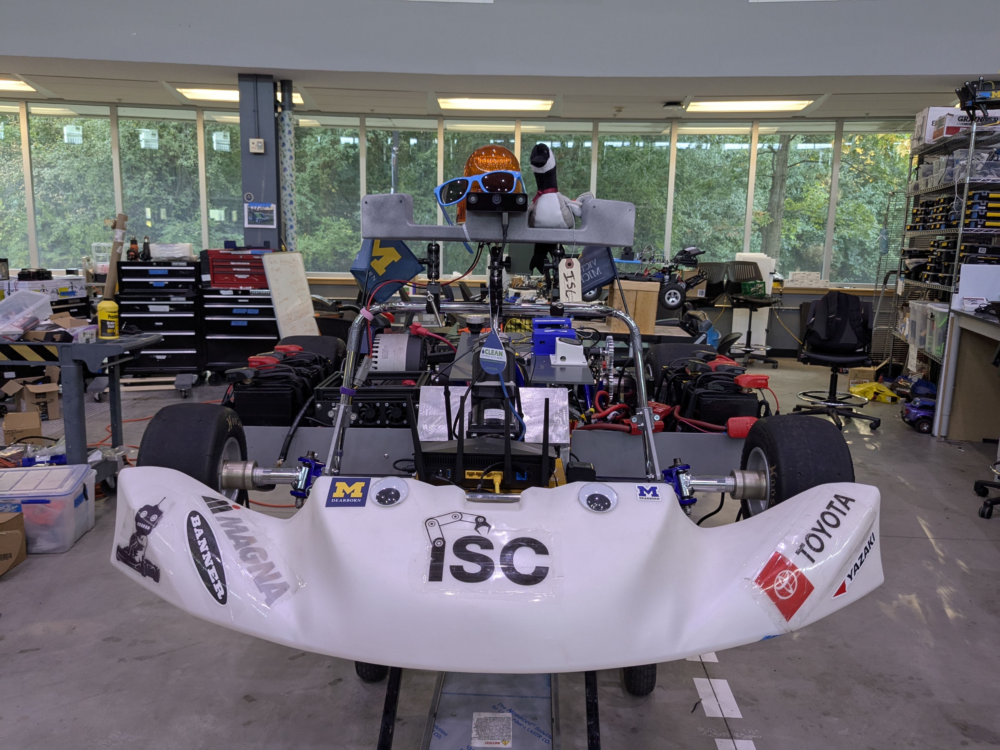
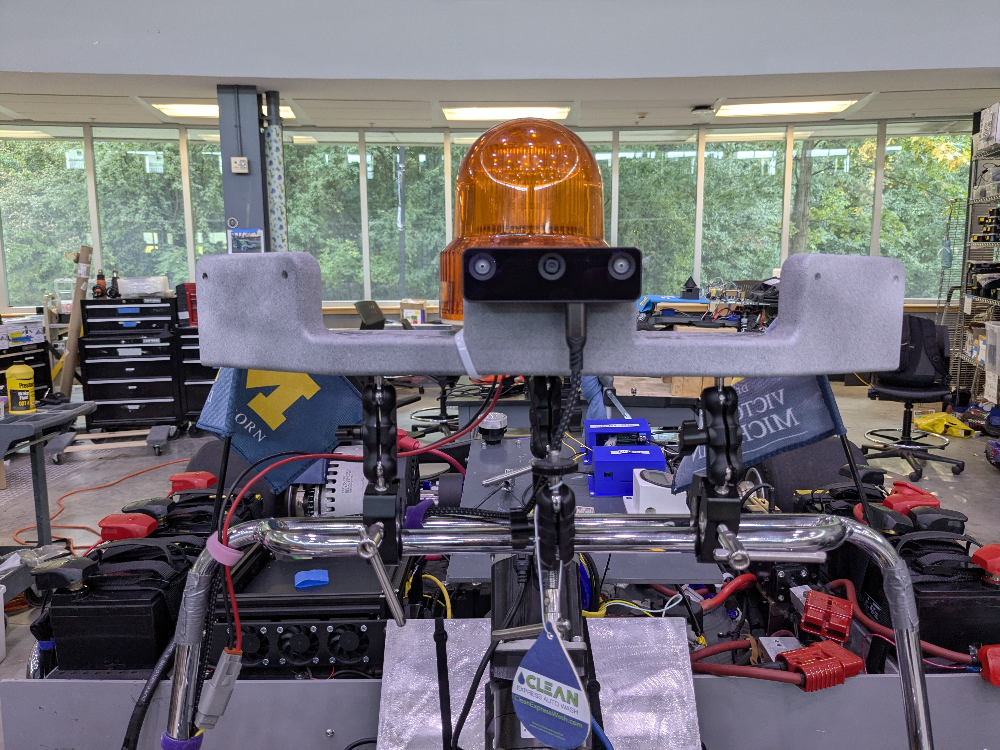

$ cat kart-perception/README.md
Perception Lead · Intelligent Systems Club, UM-Dearborn · Jun 2025 – May 2026
The perception layer that tells an autonomous go-kart where it can drive
Led perception for a student-built autonomous kart — from road segmentation to a drivable corridor the planner can actually consume, live at 3 Hz.
Role
Perception Lead — owned the full perception stack on a student team
Goal
Camera-only drivable-corridor detection, robust to lighting
Key outcome
94% mAP50 road segmentation, corridor published at 3 Hz
Context
Intelligent Systems Club, University of Michigan-Dearborn
94%
mAP50 (91.4% mAP50-95) — YOLO11 fine-tuned for road segmentation
3×
dataset expansion via augmentation for lighting & viewpoint robustness
3 Hz
drivable corridor published to the planner as live ROS2 topics
A kart needs geometry, not pixels
Raw segmentation masks don't steer a vehicle. The planner needs a drivable corridor — clean left/right boundaries with depth — derived from sparse masks, robust across lighting and viewpoints, delivered on a real-time budget.
01Fine-tuned YOLO11 on a Roboflow road-segmentation dataset expanded 3× via augmentation for lighting and viewpoint robustness → 94% mAP50, 91.4% mAP50-95.
02Derived corridor geometry by extracting left/right road boundaries from sparse masks via distance transforms.
03Fused OAK-D W RGB-D depth for kart and bumper localization.
04Published the corridor to the planner as 3 Hz ROS2 topics — a stable contract between perception and planning.
- 94% mAP50 / 91.4% mAP50-95 road segmentation in varied lighting
- Sparse masks → clean corridor geometry the planner consumes directly
- Live on the kart — perception-to-planning pipeline running end-to-end
- Led the perception sub-team; owned architecture and delivery

Fig 1 — YOLO11 road segmentation on the kart's camera: drivable region overlay

Fig 2 — the autonomous go-kart (ISC, UM-Dearborn) with roof-mounted perception

Fig 3 — the OAK-D W stereo depth camera on the perception mast
team leadershipYOLO11semantic segmentationdata augmentationdistance transformsRGB-D sensor fusionOAK-D WROS2real-time perception